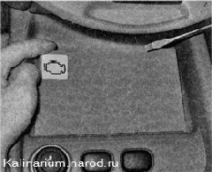
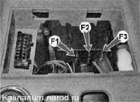
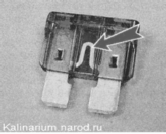
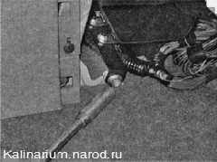
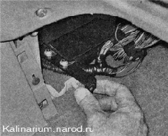
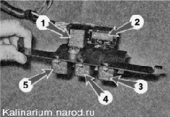
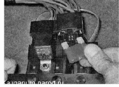

Предохранители и реле системы управления двигателем - заменаЦепи системы управления двигателем защищены тремя плавкими предохранителями, расположенными под крышкой в облицовке туннеля пола. Реле системы собраны в блок и установлены под центральной консолью. В блок дополнительно встроен предохранитель электровентилятора системы охлаждения двигателем. Замена основных предохранителей 1. Подготавливаем автомобиль к выполнению работы и отсоединяем клемму проводов от отрицательного вывода аккумуляторной батареи. 2. Поддев отверткой, открываем и снимаем крышку с центральной консоли.  Расположение предохранителей и колодки диагностического разъема системы управления двигателем в накладке туннеля пола 3. В монтажном блоке предохранителей и реле имеется пинцет для извлечения предохранителей из гнезда. Неисправный предохранитель определяем по перегоревшей нити.  4. Устанавливаем предохранитель на место, подключаем аккумуляторную батарею и убеждаемся в исправной работе двигателя . По окончании проверки устанавливаем крышку на место. Рекомендация Иногда нить предохранителя остается целой, в то время как ее соединение внутри предохранителя нарушено. Визуально определить такую неисправность невозможно. В этом случае оценить состояние предохранителя можно при помощи омметра. Перед заменой предохранителя необходимо определить и устранить причину перегорания предохранителя. Во избежание выхода из строя элементов системы управления двигателем нельзя устанавливать предохранители с увеличенным номиналом или самодельные. Предохранители системы унравления двигателем
Замена реле и дополнительного предохранителя 1. Подготавливаем автомобиль к выполнению работы и отсоединяем клемму проводов от отрицательного вывода аккумуляторной батареи. 2. Снимаем правую накладку консоли панели приборов. 3. Торцовым ключом отворачиваем гайку крепления блока реле. 
4. Извлекаем блок реле из-под консоли панели приборов. 
5. Отводим блок в сторону на длину жгута проводов. 
Блок реле системы управления двигателем и дополнительный предохранитель: 1 — реле включения топливного насоса; 2 — предохранитель электровентилятора системы охлаждения (50А); 3 — реле включения электровентилятора системы охлаждения (низкая скорость); 4 — главное реле; 5 — реле электровентилятора системы охлаждения (высокая скорость) 6. Извлекаем предохранитель электровентилятора системы охлаждения двигателя. Проверяем предохранитель и заменяем неисправный. 
7. Аналогично заменяем реле системы управления двигателем. 8. Устанавливаем блок реле под центральную консоль и крепим ее гайкой. 9. Подключаем аккумуляторную батарею и убеждаемся в исправной работе системы управления двигателем. 10. По окончании проверки устанавливаем правую накладку консоли панели приборов. Перед заменой предохранителя необходимо определить и устранить причину перегорания предохранителя. |